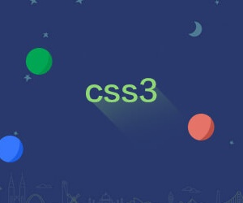
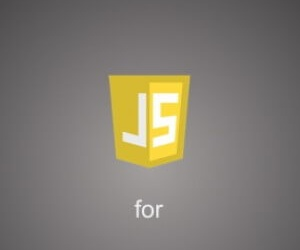
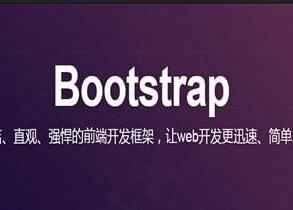

前端开发(web)
前端是指网站的界面部分，包括使用超文本标记语言html搭建基本结构，使用样式布局语言css设计界面样式，使用脚本语言javasript实现页面的动态效果。这些都是我们要重点学习的部分。除此之外还要掌握必要的框架，像javascript的库jQuery，开源框架Bootstrap。使用框架的好处有提高开发效率和减少各种bug等等。
- HTML详解
- CSS布局
- JS教程
- JQuery介绍
- AJAX入门
- Bootstrap使用
前端是指网站的界面部分，包括使用超文本标记语言html搭建基本结构，使用样式布局语言css设计界面样式，使用脚本语言javasript实现页面的动态效果。这些都是我们要重点学习的部分。除此之外还要掌握必要的框架，像javascript的库jQuery，开源框架Bootstrap。使用框架的好处有提高开发效率和减少各种bug等等。